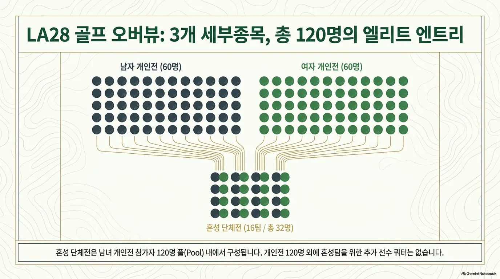
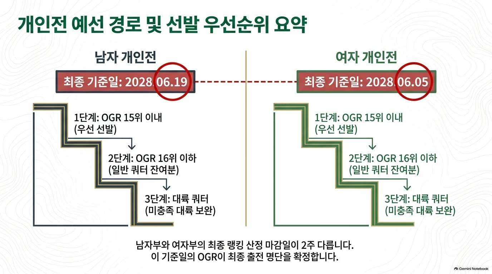
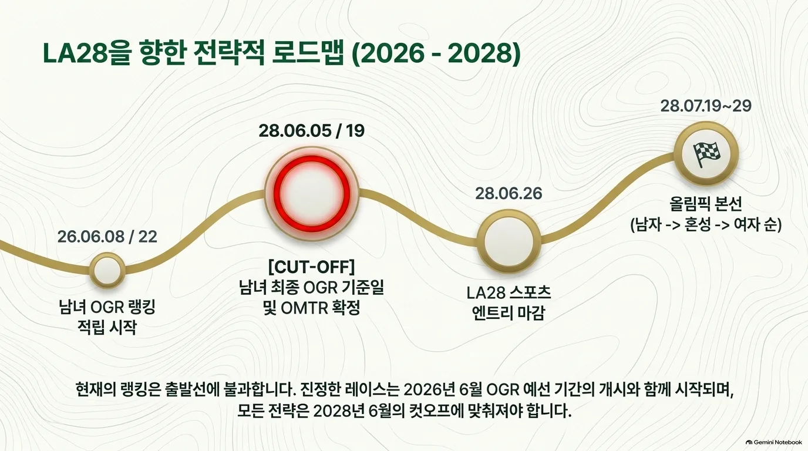

골프 (Golf)
예선 규정
이벤트 및 출전 쿼터
60명남자 개인 스트로크플레이60명여자 개인 스트로크플레이16팀혼성 · 개인전 선수 32명혼성 단체전에는 16개 국가 올림픽위원회(NOC)가 출전한다. 각 팀은 같은 국가 올림픽위원회(NOC)가 개인전에 엔트리한 남자 1명과 여자 1명으로 구성되며, 전체 규모는 총 32명 / 16팀이다. 개인전의 총 120명 외에 추가 선수 쿼터는 없다.
| 세부종목 | 일반쿼터 | 개최국쿼터 | 보편성쿼터 | 합계 |
|---|---|---|---|---|
| 남자 개인 | 59 | 1 | 0 | 60 |
| 여자 개인 | 59 | 1 | 0 | 60 |
| 혼성 단체전 | 0 | 0 | 0 | 0 (추가 없음) |
| 합계 | 118 | 2 | 0 | 120 |
| 일반쿼터 | 개최국쿼터 | 보편성쿼터 | 합계 |
|---|---|---|---|
| 59 | 1 | 0 | 60 |
| 일반쿼터 | 개최국쿼터 | 보편성쿼터 | 합계 |
|---|---|---|---|
| 59 | 1 | 0 | 60 |
| 일반쿼터 | 개최국쿼터 | 보편성쿼터 | 합계 |
|---|---|---|---|
| 0 | 0 | 0 | 0 (추가 없음) |
| 일반쿼터 | 개최국쿼터 | 보편성쿼터 | 합계 |
|---|---|---|---|
| 118 | 2 | 0 | 120 |
이벤트별 상한: 국가 올림픽위원회(NOC)당 개인전은 같은 성별 OGR 15위 이내 최대 4명, 16위 이하 경로는 15위 이내 선수를 포함해 최대 2명. 혼성 단체전은 1팀.

예선 경로
개인전은 올림픽 골프 랭킹(OGR), 혼성은 올림픽 혼성 단체 랭킹(OMTR)을 기준으로 선발한다.
남자 개인 · 스트로크플레이남자 개인 선발 경로
60명 · 최종 OGR 기준일 2028.06.19 · IGF 공식 OGR ↗
| 경로 | 쿼터 | 선발 방식 |
|---|---|---|
| (규정 D.1) OGR 15위 이내 | 우선 선발 | [1] |
| (규정 D.1) OGR 16위 이하 | 일반쿼터 잔여 | [2] |
| (규정 D.1) 대륙 쿼터 | 일반쿼터에 포함 | [3] |
| (규정 D.3) 개최국쿼터 | 1명 | [4] |
- [1]2028.06.19 최종 OGR 기준으로 15위 이내 선수를 우선 선발한다. 국가 올림픽위원회(NOC)당 같은 성별 최대 4명이다.
- [2]16위부터 순서대로 선발하되, 15위 이내 선수를 포함하여 국가 올림픽위원회(NOC)당 같은 성별 최대 2명까지다. 이미 2명 이상을 확보한 경우 이 경로로 추가할 수 없다. 대륙 쿼터를 포함해 일반쿼터 59명을 채운다.
- [3]자동 선발된 대표가 없는 올림픽 운동의 5개 대륙에 각 최소 1명을 보장한다. 해당 대륙의 OGR 최상위 적격 선수에게 배정하며, 59명에 포함된다.
- [4]미국이 해당 성별 OGR 경로로 선수를 확보하지 못하면 개최국쿼터 1명을 적용한다. 필요 없는 개최국쿼터는 국가별 상한을 지키면서 OGR의 다음 적격 선수에게 돌아간다.
여자 개인 선발 경로
60명 · 최종 OGR 기준일 2028.06.05 · IGF 공식 OGR ↗
| 경로 | 쿼터 | 선발 방식 |
|---|---|---|
| (규정 D.1) OGR 15위 이내 | 우선 선발 | [1] |
| (규정 D.1) OGR 16위 이하 | 일반쿼터 잔여 | [2] |
| (규정 D.1) 대륙 쿼터 | 일반쿼터에 포함 | [3] |
| (규정 D.3) 개최국쿼터 | 1명 | [4] |
- [1]2028.06.05 최종 OGR 기준으로 15위 이내 선수를 우선 선발한다. 국가 올림픽위원회(NOC)당 같은 성별 최대 4명이다.
- [2]16위부터 순서대로 선발하되, 15위 이내 선수를 포함하여 국가 올림픽위원회(NOC)당 같은 성별 최대 2명까지다. 이미 2명 이상을 확보한 경우 이 경로로 추가할 수 없다. 대륙 쿼터를 포함해 일반쿼터 59명을 채운다.
- [3]자동 선발된 대표가 없는 올림픽 운동의 5개 대륙에 각 최소 1명을 보장한다. 해당 대륙의 OGR 최상위 적격 선수에게 배정하며, 59명에 포함된다.
- [4]미국이 해당 성별 OGR 경로로 선수를 확보하지 못하면 개최국쿼터 1명을 적용한다. 필요 없는 개최국쿼터는 국가별 상한을 지키면서 OGR의 다음 적격 선수에게 돌아간다.
혼성 단체전 선발 경로
혼성 단체전에는 16개 국가 올림픽위원회(NOC)가 출전한다. 각 팀은 같은 국가 올림픽위원회(NOC)가 개인전에 엔트리한 남자 1명과 여자 1명으로 구성되며, 전체 규모는 총 32명 / 16팀이다. 개인전의 총 120명 외에 추가 선수 쿼터는 없다.
| 경로 | 쿼터 | 선발 방식 |
|---|---|---|
| (규정 D.2) OMTR | 총 16팀 내 선발 | [1] |
| (규정 D.3) 개최국 | 16팀 중 1팀 보장 | [2] |
- [1]남녀 개인전 모두에 출전 자격을 갖춘 국가 올림픽위원회(NOC)를 대상으로 한다. 2028.06.19에 남녀 최종 OGR 중 각 국가의 가장 높은 선수 순위를 사용해 OMTR을 정한다. 총 16팀의 정원 안에서 개최국 보장과 함께 적용한다.
- [2]미국에는 개인전 출전 자격을 갖춘 남자 1명·여자 1명으로 구성한 1팀을 보장한다. OMTR로 이미 확보했다면 필요 없는 개최국 자리는 다음 적격 국가 올림픽위원회(NOC)에 재배정한다. 총 참가 팀 수는 16팀이다.
OMTR의 정의와 선발 절차 →

개최국·보편성 쿼터
개최국 미국에는 개인전 남녀 각 1명과 혼성 1팀을 보장하는 규정이 있다. 개인전 개최국 보장은 성별로 판단하며, 랭킹으로 이미 확보한 경우 해당 쿼터를 다음 적격 선수에게 재배정한다.
보편성 쿼터는 0명이다. 대륙별 대표 보장은 일반쿼터에 포함되는 별도 규정으로, 보편성 쿼터와 다르다.
참가 자격
올림픽 헌장, 세계반도핑규약, 경기 조작 방지 규정, IOC 참가 조건 및 IGF 규정을 충족해야 한다.
- 남자 2028.06.19·여자 2028.06.05 기준 OGR 또는 IGF 재배정 예비 명단에 선수 이름이 등재되어야 한다.
- 소속 국가 연맹 및 IGF와 정상적인 회원 관계를 유지해야 한다.
- 국가 연맹의 인정을 받거나 해당 연맹이 발급한 유효한 라이선스를 보유해야 한다.
개인전 쿼터는 선수 이름으로, 혼성 단체전 쿼터는 국가 올림픽위원회(NOC)에 배정된다.
예선 일정
예선 및 대회 일정
2026년에는 예선 랭킹 적립 기간이 시작된다. 이 시점의 랭킹은 확정 출전 명단이 아니다.
| 날짜 | 일정 |
|---|---|
| 2026.06.08 | 여자 OGR 예선 기간 시작 |
| 2026.06.22 | 남자 OGR 예선 기간 시작 |
| 2028.06.05 | 여자 최종 OGR 기준일 · 예선 기간 종료 |
| 2028.06.06 | 여자 최종 OGR 발표 및 쿼터 통보 |
| 2028.06.19 | 남자 최종 OGR 기준일 · OMTR 확정 |
| 2028.06.20 | 남자 최종 OGR·OMTR 발표 및 쿼터 통보 |
| 2028.06.22 | 쿼터 사용 확인 마감 (미국 동부시간 17:00) |
| 2028.06.24 | 미사용 쿼터 재배정 마감 (미국 동부시간 17:00) |
| 2028.06.26 | LA28 스포츠 엔트리 마감 |
| 2028.07.19–22 | 남자 개인전 |
| 2028.07.21 | 복수 적격 선수 보유 시 혼성 선수 이름 확정: 남자 3라운드 종료 후 2시간 이내 |
| 2028.07.23–24 | 혼성 단체전 |
| 2028.07.26–29 | 여자 개인전 |

직전 올림픽 메달리스트
2024 파리 올림픽
| 세부종목 | 금 | 은 | 동 |
|---|---|---|---|
| 남자 개인 | |||
| 여자 개인 | |||
| 혼성 단체 | 신설 | ||
대한민국
한국 출전 전망
2026-09-30 기준 참고현재 랭킹을 LA28 규정에 단순 적용한 참고치이며 2028 확정 전망이 아님.
남자 약 2명 · 여자 3~4명 가능 범위
남자는 국가별 일반 상한 2명을 중심으로 본다. 여자 세계랭킹의 현재 수치만 적용하면 4명이며, 네 번째 선수가 15위 경계에 있어 3~4명 범위로 설명한다. 이는 통계적 예측 구간이나 최소 인원 보장이 아니다.
| 선수 | 공개 순위 | 근거 |
|---|---|---|
| 김시우 | OGR 9위 / OWGR 14위 | IGF · 2026.09.28 |
| 김주형 | OGR 17위 / OWGR 32위 | IGF · 2026.09.28 |
| 유해란 | OGR 3위 / WWGR 3위 | IGF · 2026.09.28 |
| 김효주 | OGR 4위 / WWGR 4위 | IGF · 2026.09.28 |
| 김세영 | OGR 9위 / WWGR 9위 | IGF · 2026.09.28 |
| 김민솔 | OGR 15위 / WWGR 15위 | IGF · 2026.09.28 |
남자: IGF가 연결하는 공식 랭킹 트래커의 2026.09.28 남자 60명 명단에는 김시우(9위)·김주형(17위), 한국 선수 2명이 표시된다. 김시우의 15위 이내 진입만으로 한국의 상한이 자동으로 4명이 되지는 않는다. 세 번째·네 번째 선수가 추가되려면 각각 15위 이내 조건이 필요하므로 약 2명을 참고 범위로 둔다. 트래커의 OGR 순번과 OWGR 세계순위는 서로 다르며, 이 명단은 2028년 확정 대표 명단이 아니다.
여자: 9월 28일 WWGR 및 IGF 여자 트래커에는 한국 선수 4명이 15위 이내에 있다. 현재 수치의 단순 적용 결과는 4명이다. 네 번째 선수의 순위가 16위 이하로 바뀌고 나머지 3명이 15위 안에 남는 경우에는 3명이 된다.
혼성: 남녀 개인전 출전자를 모두 확보하고 OMTR 선발 요건을 충족해야 1팀을 구성할 수 있다. 개인전 참가 가능 인원을 혼성 출전 확정으로 해석하지 않는다.
자료 기준: 2026.09.30 이전 최신 주간 자료인 2026.09.28 IGF 남녀 트래커와 WWGR 여자 주간표를 사용했다. OGR은 현재 선발 참고 순번, OWGR/WWGR은 세계순위로 구분했다. 현재 명단을 2028년 최종 선발 결과로 해석하지 않는다. 2028년 최종 랭킹·참가 자격·쿼터 수락에 따라 달라질 수 있다.
한국 선수단 구성 계산 → 세부종목별 경로·등급·확률로 인원 분포와 시나리오를 계산한 문서
골프 · 올림픽예선 | 규정 확인 2026.10.01 · 한국 전망 기준 2026.09.30
각주
외부 링크
공식 근거
- IGF · LA28 Qualification System (PDF, 문서 표기 2026.01.31) — B~G
- IGF · 남자 공식 Olympic Golf Ranking
- IGF · 여자 공식 Olympic Golf Ranking
- IGF 홈페이지가 연결하는 Qualification Insights
- IGF · 예선 개시 및 OMTR 공식 설명 (2026.06.09)
- OWGR · 남자 세계랭킹
- Rolex Rankings · 여자 세계랭킹
- LPGA · 여자 세계랭킹 주간 아카이브
규정 확인일: 2026.10.01. IGF 공식 OGR 페이지가 직접 연결하는 PDF를 기준으로 정리했다. 기존 골프 페이지의 2026.05.12 표기는 해당 PDF에서 확인되지 않아 사용하지 않았다. 본 문서는 비공식 한국어 요약이며 최종 적용은 IGF 공지를 따른다.